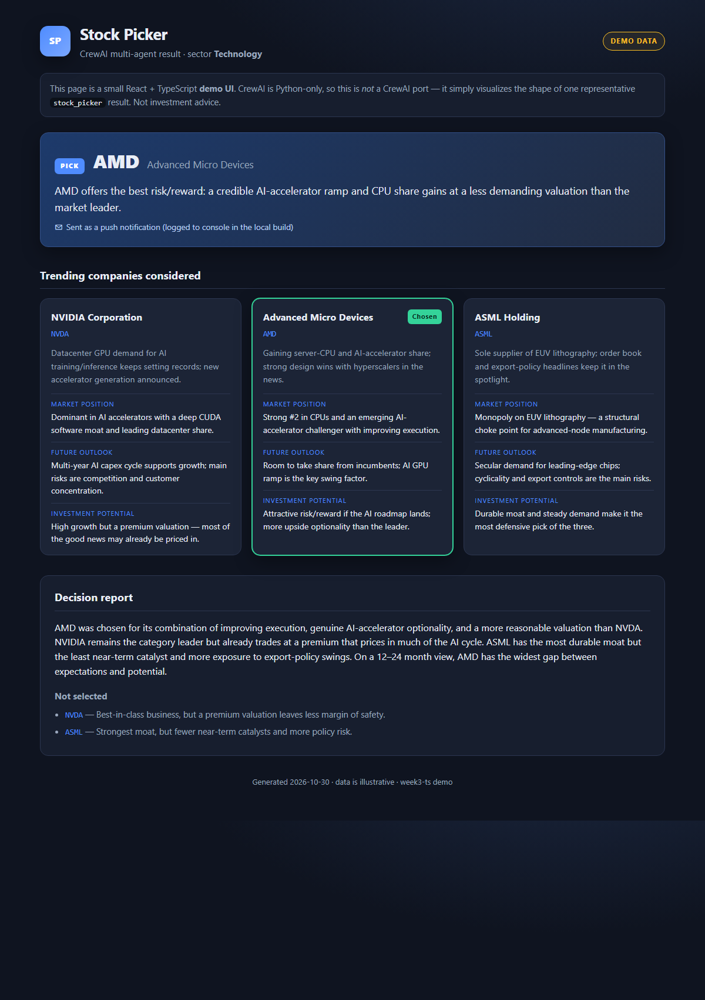

Week 3 · Project Build — the Stock Picker Crew, Step by Step
Build the stock-picker crew from an empty folder with uv and CrewAI: agents and tasks in YAML, Pydantic output, a custom push tool and a hierarchical manager, plus a small React demo UI that shows the result.
Build it yourself · Python + uv (+ a React demo UI)This is the Week 3 project: the Stock Picker — a crew of agents that finds companies trending in the news, researches each one, and picks the best to invest in, sending the decision as a notification. It brings together everything from the week: agents and tasks defined in YAML, typed results with Pydantic output, a manager running a hierarchical process, a custom tool, and memory.
CrewAI is a Python framework with no JavaScript port, so the two tracks are not the same program in two languages:
- Track A — Python + uv: the real project. A CrewAI crew with agents/tasks in YAML, a Pydantic-typed result, a custom push tool, a hierarchical manager and memory.
- Track B — a small React demo UI: not a port of the crew, but a TypeScript page that shows a sample pick — the trending companies, the research and the final decision — so the week has a UI to look at.
The core idea of Track A is a team described in YAML. You write agents (each a role, goal and backstory) in agents.yaml and the work (each a task with an expected_output) in tasks.yaml, wire them in a crew.py with the @CrewBase decorators, and CrewAI runs them. The capstone twist is a hierarchical process: a manager_agent decides how to delegate the tasks instead of running them in a fixed order.
Build it step by step
A runnable version of the stock-picker crew lives in week3-py/. It runs with no paid keys: every agent and the memory embeddings use a local Ollama model, so you can watch the real crew kick off for free:
# 1. Install Ollama from https://ollama.com, then pull the models it uses
ollama pull llama3.2
ollama pull nomic-embed-text
# 2. Install dependencies (UV_NATIVE_TLS=1 avoids corporate TLS errors)
cd week3-py
UV_NATIVE_TLS=1 uv sync
# 3. Run the crew (STOCK_PICKER_MEMORY=0 drops chromadb on a low-RAM machine)
uv run python -m stock_picker.mainWhat was verified locally against Ollama: the crew kicked off with ollama/llama3.2 for every agent and nomic-embed-text for embeddings; the hierarchical process started and the Manager began delegating; all three memory types (Long Term over SQLite, Short Term and Entity over RAG storage) were queried; the custom tool was invoked; and the YAML agents/tasks and Pydantic output loaded. What was shown as in the course but not run here: the Serper web search (replaced by an offline stub tool) and the Pushover phone alert (replaced by a tool that just logs the message); all hosted openai/gpt-4o models were swapped for ollama/llama3.2. Honest caveat: on this machine the full run was stopped by host memory pressure before it printed the final decision (two local models plus chromadb are RAM-heavy) — set STOCK_PICKER_MEMORY=0 or run it in the foreground to reach the end; the crew and its wiring are what is proven.
New to CrewAI? How a crew is put together
A crew is a team of agents. Each agent has a role, goal and backstory (written in agents.yaml) that shape how it behaves. Each task describes a unit of work and the expected_output (in tasks.yaml), and names which agent does it. A process decides the order: sequential runs tasks top to bottom; hierarchical hands them to a manager agent that delegates. The crew.py file ties agents, tasks and the process together with the @CrewBase, @agent, @task and @crew decorators.
Track A - Python + uv (CrewAI stock-picker from an empty folder)
- Scaffold the project. Either install the CrewAI CLI and run
crewai create crew stock_picker(it generates thesrc/stock_picker/layout withconfig/agents.yaml,config/tasks.yaml,crew.pyandmain.py), or start withuv initand create those files by hand.uvmanages a local.venvfor you. - Add the dependencies:
uv add crewai crewai-tools pydantic. To run free against Ollama, alsouv add ollama(for the embedder) — the course uses hosted models, which need no extra package. - Create a
.envfile with your keys (never commit it). The course uses OpenAI and Serper; to run the slice free, point CrewAI's LiteLLM at Ollama instead:OPENAI_API_KEY=sk-... SERPER_API_KEY=your-serper-key PUSHOVER_TOKEN=your-pushover-token PUSHOVER_USER=your-pushover-user # to run free on Ollama: OLLAMA_API_BASE=http://localhost:11434 - Write
config/agents.yaml. Define the agents by their role, goal and backstory — atrending_company_finder, afinancial_researcher, astock_picker, and amanager. Each entry'sllmnames the model (openai/gpt-4o-miniin the course,ollama/llama3.2to run free). The manager is the one that will delegate. - Write
config/tasks.yaml. Describe each task and itsexpected_output, and which agent runs it: find trending companies, research them, then pick one. The research task takes the finder's output ascontext, so each step builds on the last. - Add typed results. In
crew.py, declare Pydantic models —TrendingCompany,TrendingCompanyList,TrendingCompanyResearch— and setoutput_pydantic=TrendingCompanyListon the relevant task so the model must return structured, validated data instead of free text. - Write the custom push tool,
tools/push_tool.py. SubclassBaseTool, give it aname, adescriptionand anargs_schema(a Pydantic model), and implement_run(self, message)to send a Pushover notification (the runnable slice just logs the message instead). - Assemble the crew in
crew.py. Use@CrewBasewith@agent/@taskmethods reading the YAML, and a@crewmethod returning aCrewwithprocess=Process.hierarchical, amanager_agent,memory=True(configuring Long Term / Short Term / Entity memory with their SQLite and RAG storage), and the push tool. - Run it:
uv run python -m stock_picker.main. The manager delegates the tasks, the crew researches and picks a company, and the push tool fires with the decision. (On a low-RAM machine, setSTOCK_PICKER_MEMORY=0to drop the vector store.)
The full, verified code for the crew, the Pydantic models, the custom tool and the memory configuration is embedded line by line on the Day 3 and Day 4 pages — build those first; this page is the map that joins them into one project.
context, typed output keeps the data clean, and shared memory lets the crew remember across runs.Track B - React demo UI
Track B is the real week3-ts/ project, and it is deliberately a demo UI, not the crew in TypeScript. CrewAI is Python-only; this page ports nothing. It is a static React SPA whose numbers live in src/data.ts and are not connected to the Python crew; it only shows the shape of a stock-pick result.
- Scaffold a React + TypeScript app with Vite:
npm create vite@latest week3-ts -- --template react-ts cd week3-ts npm install - Keep the dependencies tiny. It is a static page, so it needs only
reactandreact-domat runtime, plus the Vite / TypeScript dev tools from the template. No server, no network call. - Create
src/types.tsandsrc/data.ts. DeclareTrendingCompanyand a decision interface that mirror the crew's Pydantic models, then fill a representative pick — a handful of trending companies with a one-line reason each, a short research note, and a final chosen company with its rationale. Clearly made-up demo values. - Build
src/App.tsx. Render the final pick as a headline card (company + rationale), the list of trending companies, and the per-company research below it. - Style it in
src/styles.csswith light/dark-aware colours so the page reads well in either theme. - Check and preview. Run
npm run typecheckandnpm run build(both must be clean), thennpm run previewto serve the built page for the screenshot.
Built and previewed, the demo page looks like this:

src/App.tsx), serving static content from src/data.ts. It shows the shape of a stock-pick result; it is not connected to the Python crew.- The Stock Picker: a crew that finds trending companies, researches them, and picks one to invest in, sending the decision as a notification.
- Agents and tasks defined in YAML, a hierarchical process with a
manager_agent, typed results viaoutput_pydantic, a customBaseToolpush tool, and three kinds of crew memory. - Track A in Python + uv is the real project; a free local version in
week3-py/kicks the crew off against Ollama. - Track B (
week3-ts/) is a small React demo UI showing a sample pick — clearly labelled as representative, not a port of the crew. - Full, line-by-line code is on the Day 3 and Day 4 pages.